Зачем нужна вышивка на одежде
Современная одежда с вышивкой относится к декоративному искусству рукоделия. Принцип вышивки – работа иголкой или крючком, или специальной машинкой.
Вышивать можно на коже, фетре, хлопке, льне, шелке. Для вышивки используют шерстяные нити и бисер, жемчуг, камни, блестки, блестки, золото, иногда даже монеты.
В зависимости от типа технологии вышивки, рисунок, его плотность, ажурность будут разные. Орнаменты и узоры могут иметь плоский или выпуклый вид, быть слегка очерченными, кружевными или плотно покрывать всю поверхность изделия.
Материалы для сегодняшней работы:
- Нитки мулине
- Иголка
- Неэластичная сетка
- Пяльца (необязательно)
- Карандаш (для переноса рисунка на ткань, можно и без него - на глаз)
- То, на чем будет вышивка
Ручная вышивка на трикотаже
Трикотаж - не лучшая ткань в мире для использования для ручной вышивки, но бывают случаи, когда для определенных целей надо использовать ее (например, когда охотно разнообразить белое полотно футболки).
Рисунок может быть абсолютно любым, в данном примере - это уточки
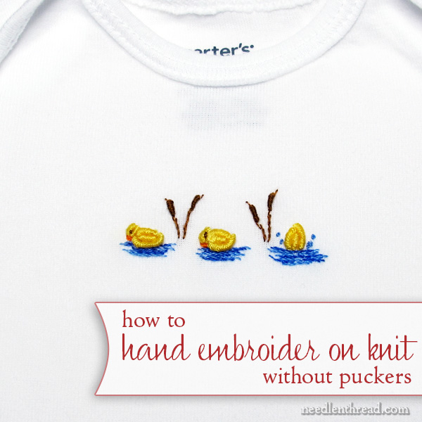При вышивке на трикотажной ткани необходим неэластичную сетку (стабилизатор). Какой бы стабилизатор вы ни решили использовать, его смысл в следующем: он нужен, чтобы трикотаж не растягивался во время вышивания.
Далее под рукой желательно иметь наждачную бумагу. Она нужна для того, что бы вы время от времени вытирали об нее иглу, т.к. во время вышивки игла, проходя через неэластичную сетку, будет набирать липкий слой этой сетки.
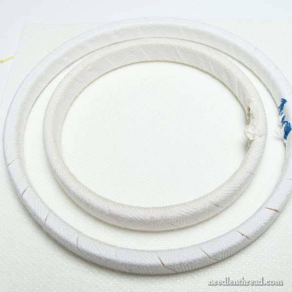Еще вам понадобятся пяльца, которые зафиксируют область вышивки. Лучше взять большого диаметра, т.к. чем меньше вы будите передвигать их во время работы, тем более хороший результат получите в конце.
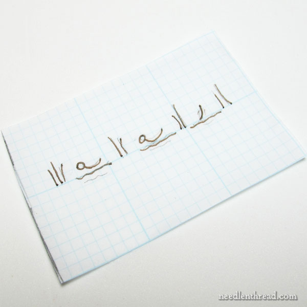 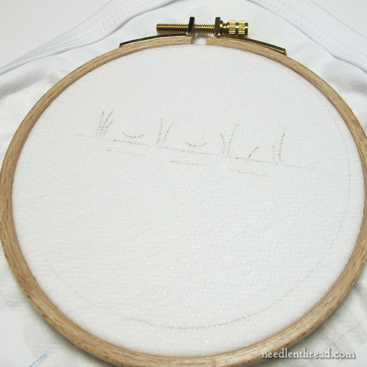Если ваш рисунок сложный, вы можете его нарисовать на водорастворимом флизелине и затем прикрепить его к ткани. Тут рисунок простой, потому можно просто нанести его на ткань простым или водорастворимым карандашом.
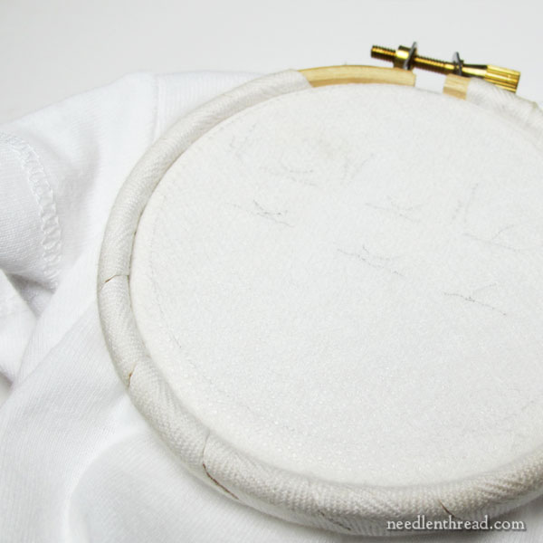После нанесения рисунка на ткань, надо оторвать заднюю часть стабилизатора и приклеить ее на ткань (надо убедиться что стабилизатор выступает за края пялец).
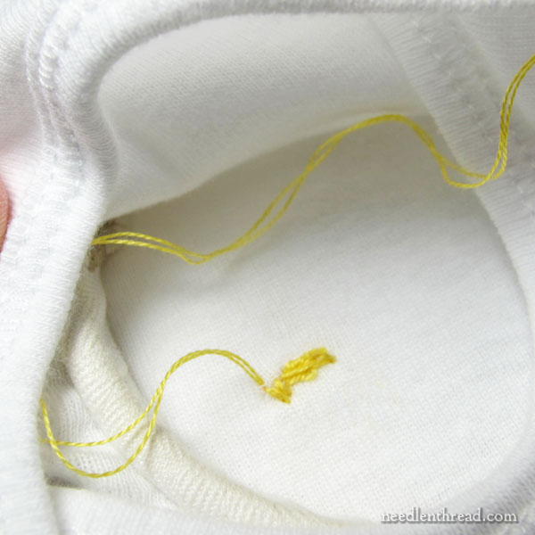Теперь можно начать вышивать.
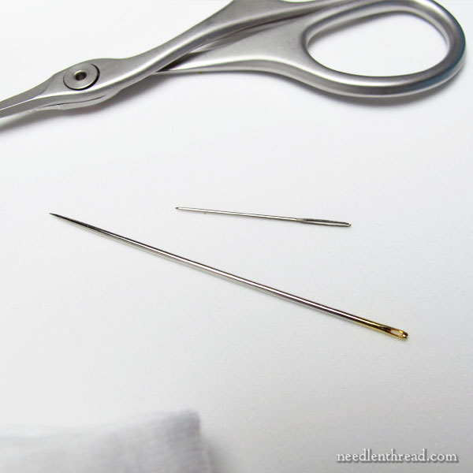Еще для удобства закрепления швов, можно воспользоваться более тонкой иглой.
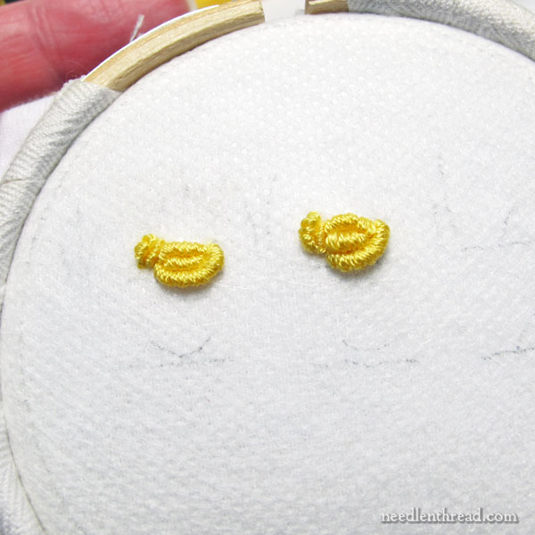 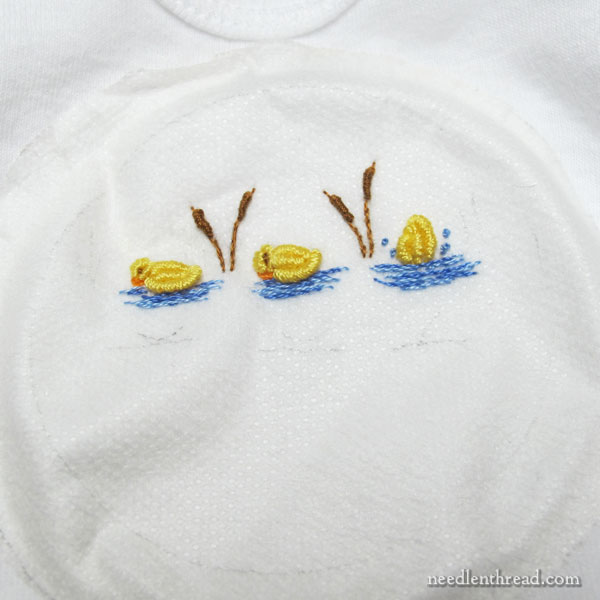 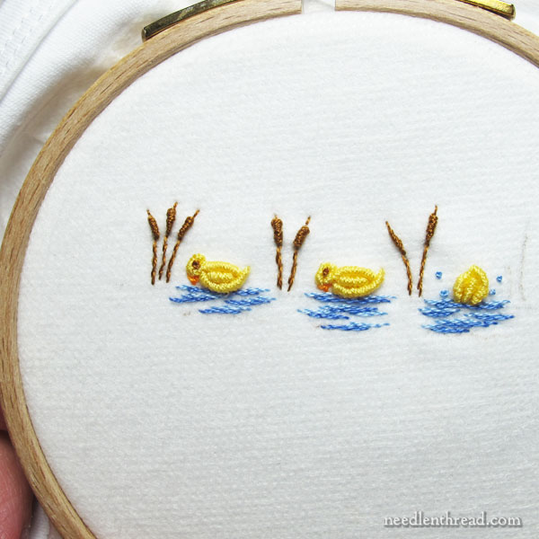В конце работы снимите пяльцы, водой смойте неэластичную сетку, высушите и прогладьте утюгом футболку.
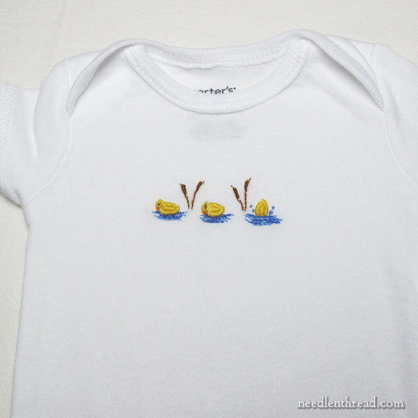Вот и все.
мор
спасибо, после вашего вязанного хлеба у меня вернулся отец